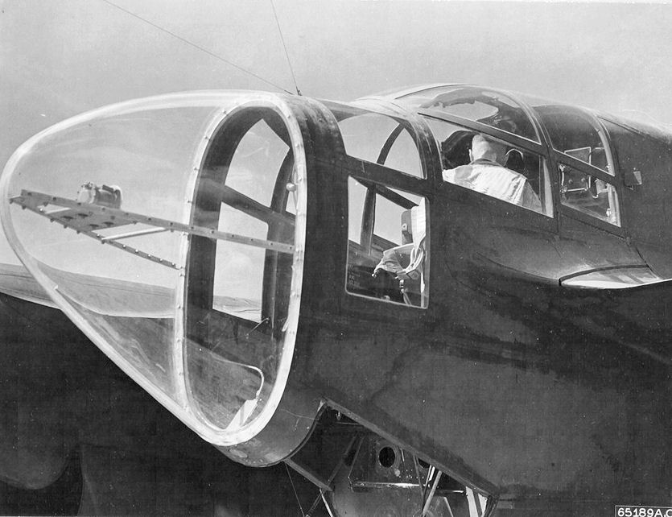
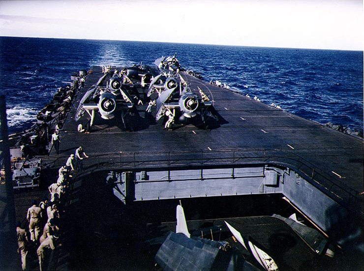
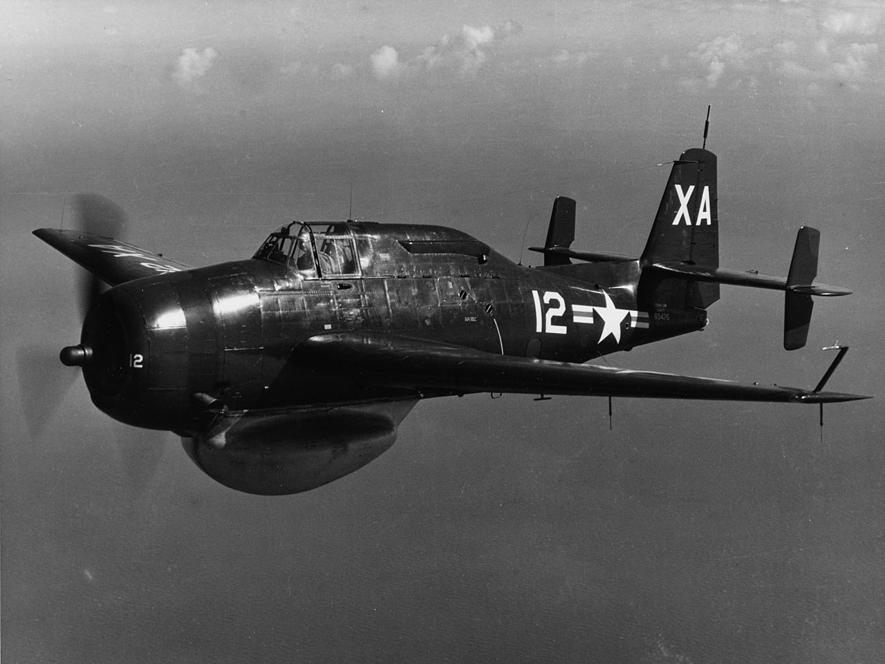
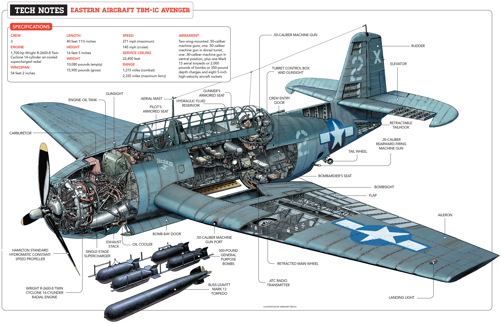
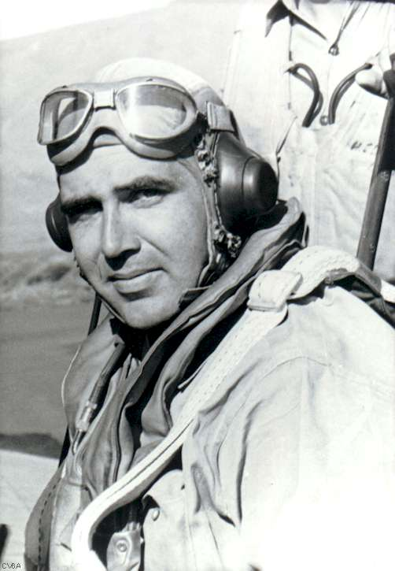
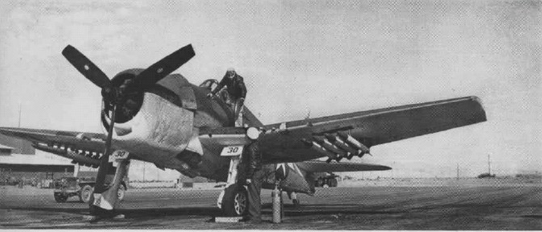

WW2 중 항모에서의 야간 작전 (1) - 용감한 늙은 조종사는...
게시: 2025-02-13T06:30:25+09:00
<혁신적 기획, 비극적 결말> 1943년 11월, 타라와와 마킨 섬 점령 작전 때 미해군 항모들은 일본 해군 폭격기들의 끊임없는 공격에 시달렸음. 그러나 신형 SM 레이더의 정확한 유도를 받은 F6F Hellcat 전투기들이 내습하는 일본 폭격기들을 모조리 사냥. 하지만 이건 어디까지나 낮의 경우. 밤에 날아오는 일본 폭격기들에 대해서는 뾰족한 대응 수단이 없었음. 당시에도 이미 공대공 레이더를 장착한 야간 전투기가 활약 중이었지만, 레이더를 장착하고 그 레이더 운용병을 태워야 했던 당시 야간 전투기들은 예외없이 모조리 쌍발 전투기 혹은 쌍발 전투기로 개조한 폭격기.

(사진은 미육군 최초의 야간 전투기로 설계 제조된 Northrop P-61 Black Widow. 1943년 10월에 최초로 공장에서 출고되었고, 취역한 것은 1944년부터. 유럽 및 태평양 등에서 널리 사용되었으나 이미 전세가 연합군 쪽으로 확연히 기운 뒤였으므로 생산량은 그리 많지 않아 700여대 정도.)

(독특하게도 별로 밖을 내다볼 필요가 없는 레이더 운용병에게도 쾌적한 후방 뷰를 제공해주는 P-61 Black Widow의 설계. 실제로는 저 등에 달린 원격 조준 기관총의 운용을 위해서 이런 후방뷰를 제공해주는 것.)
항모에서는 이런 쌍발 항공기를 운용할 수가 없었음. 쌍발 항공기 특성상 날개폭이 너무 긴 것도 문제였지만, 이착함하는데 필요한 최저 속도가 너무 높았으므로 짧은 거리에서 이착함해야 하는 함재기로서는 도저히 사용이 불가능했기 때문.

(WW2 중에 사용된 함재기 중 가장 큰 것은 바로 Grumman TBF Avenger 뇌격기. 날개폭 16.5m. 저렇게 날개를 접은 상태라면 폭이 5.8m인데, 그렇게 접고서도 USS Enterprise처럼 꽤 큰 정규 항모 갑판이 그리 넓어보이지 않음. 그에 비해 위의 P-61은 날개폭이 20.1m.) 레이더를 장착한 야간 전투기가 없으면 야간 요격 작전은 아예 불가능. 그래서 미해군은 야간 요격을 그냥 포기했을까? 미해군 수뇌부 차원에서는 사실상 포기. 그러나 당장 하루가 멀다하고 밤에 찾아오는 일본해군 폭격기들에 시달리던 미해군 항모 조종사들은 포기하지 않았음. 당시 현장에 있던 USS Enterprise (CV-6, 3만2천톤, 32노트)에는 레이더가 장착된 함재기가 있기는 했음. 바로 Avenger 뇌격기. 이건 영국제 공대함 레이더인 ASV (air-to-surface-vessel)를 장착하여 대잠 작전용으로 쓰려고 했던 것. 그런데 어차피 공대함 레이더 ASV나 공대공 레이더 AI (Airbourne Intercept)나 거의 비슷한 기술로 만들었던 것들이었고, ASV로도 항공기를 포착하는데 큰 지장은 없었음.

(배에 레이더를 장착한 Avenger. 정확하게는 이것은 cavity magnetron을 이용한 S-band 레이더인 AN/APS-20를 장착한 TBM-3W 모델로서, 당시 엔터프라이즈에 있던 어벤저는 아님.) 하지만 문제는 어벤저는 어디까지나 전투기가 아닌 뇌격기로서, 기동성도 떨어졌지만 당장 적 폭격기를 격추하기에는 무장이 너무 빈약. 정면에서 쏘아대는 기관총은 날개에 달린 12.7mm 두 정 밖에 없었고, 12.7mm 후방 기관총 한 자루와 7.62mm 기관총 한 자루가 복부 뒤쪽에 추가로 달려 있었을 뿐. 이걸로 어둠 속에서 잘 보이지도 않는 일본군 쌍발 폭격기를 격추하는 것은 무리. 그런데 엔터프라이즈에 배속되어 있던 미해군 최초의 에이스 전투기 조종사였던 Butch O’Hare 소령이 대담한 아이디어를 냄.

(Avenger 뇌격기는 어뢰 뿐만 아니라 다양한 폭탄과 폭뢰를 사용할 수 있고, 무엇보다 큰 덩치에 어울리지 않게 저속 안정성이 매우 좋아서 작은 호위항모에서도 표준으로 채택했던 다용도 폭격기.)

(단 한 번의 전투에서 5대의 일본해군기를 격추하여 미해군에서 최초로 에이스 칭호를 얻은 Edward Henry O'Hare 당시 대위. 이 양반 이야기는 https://nasica1.tistory.com/725 참조) 오헤어 소령의 아이디어는, 찾는 것은 어벤저가 하고, 쏘아 떨어뜨리는 것은 어벤저 뒤를 졸졸 따라간 F6F Hellcat 전투기 2대가 하자는 것. 어둠 속에서 편대를 이루는 것조차 어려울 것 같은데 그게 제대로 될까 싶었으나, 당장 직접 날아올라 그 위험한 비행을 해야 했던 오헤어 소령 본인이 워낙 강력하게 주장을 하다 보니 항모전단 사령관이었던 Arthur W. Radford 제독도 반신반의하며 그 작전을 허락. 11월 24일, 함대의 SM 레이더가 야간에 타라와 섬을 공습하러 가는 일본 폭격기들을 탐지하자 어벤저 1대에 헬켓 2대가 한 조를 이룬 편대 2개 편대, 총 6대가 어둠 속으로 날아올랐음. 그러나 이 날은 어벤저들이 목표물을 찾는데 실패하고 아무 일 없이 연료만 소비함. 어쨌거나 이것이 미해군 항모 최초의 레이더 장착 항공기에 의한 야간 요격 작전.

(F6F Hellcat 전투기는 날개폭 13m로서 분명히 TMF Avenger보다 작은 함재기인데, 엔진 출력은 1600kW로서 Avenger의 1300kW보다 더 컸음. 덕분에 전투기로서 뿐만 아니라, 2000 파운드짜리 폭탄도 장착할 수 있었고, 특히 후기형에서는 저렇게 HVAR (고속 로켓탄)를 장착하고 원거리에서 지상 공격도 가능했음. 이는 매우 위험한 저고도까지 내리꽂으며 임무를 수행해야 하는 급강하 폭격기의 역할을 크게 줄여버리는 효과를 냄.)
운명의 11월 26일 밤, 또 일본 폭격기들이 이번엔 30대 정도로 떼를 이루어 야간에 공습을 해오자, 다시 똑같이 3기 1조의 2개 편대가 엔터프라이즈에서 이함. 다행인지 불행인지 이 날은 오헤어 대위가 포함된 편대의 어벤저가 적기를 제대로 포착했고, 그 유도를 받은 오헤어 소령이 성공적으로 일본 쌍발 폭격기 (아마도 G4M Betty) 1대를 격추. Phillips 소령의 지휘하에 있던 다른 편대도 쌍발 폭격기 2대를 격추. 깜깜한 어둠에 의해 보호되고 있다고 안심하고 있다가 불의의 습격을 받은 일본해군기들은 뿔뿔이 흩어졌고 이날 공습은 포기하게 됨. 불행은 그 다음에 일어남. 필립스 소령의 편대에서 눈 역할을 하던 어벤저 뇌격기의 후방 기총수는 깜깜한 어둠 속에서 잔뜩 긴장하고 있었는데, 저 뒤에서 정체불명의 항공기가 쓰윽 뒤쪽에 나타나 사격이 가능한 위치로 이동하는 것을 목격. 이건 후방 기총수로서는 기겁할 상황. 그는 즉각 발포했고, 공격받은 정체불명의 항공기는 쓰윽 미끄러지며 저 아래로 점점 하강하며 사라짐. 이때 후방 기총수가 쏜 것이 과연 아군기였는지 일본해군기였는지는 불분명. 그러나 오헤어 소령은 이 임무 비행 중 실종됨.
결국 용감한 조종사도 있고 늙은 조종사도 있지만 용감한 늙은 조종사는 없다는 말이 맞는 말인 듯.